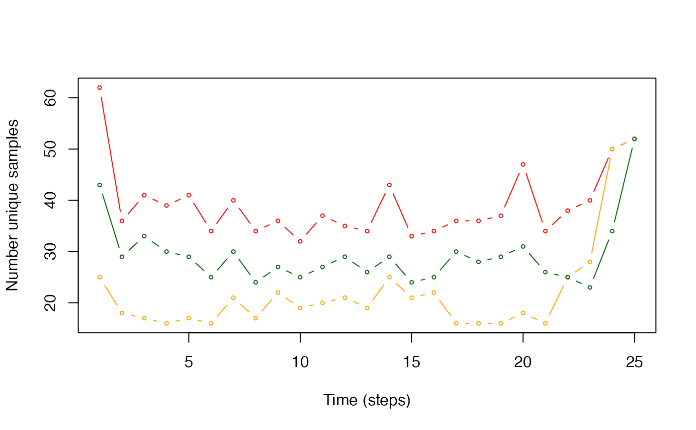

This is a vectorised implementation of the backward sampling algorithm.
pf_backward_sampler(
.history,
.dpropose = pf_dpropose,
.obs = NULL,
.dlist,
.dargs = list(),
.record = pf_opt_record(),
.verbose = getOption("patter.verbose")
)Arguments
- .history
Particle samples from the forward simulation, provided in any format accepted by
.pf_history_list(). Particle samples must containtimestep,cell_now,x_nowandy_nowcolumns.- .dpropose, .obs, .dlist, .dargs
A
functionand associated arguments used to evaluate the probability density of movement between location pairs (seepf_forward()andpf_dpropose())..dproposemust accept the following arguments, even if they are unused:.particles, adata.tableof particle samples that contains pairs of particles from the current and previous time steps. This contains the following columns:index_now,index_past---integervectors that define sample positions in particledata.tables for the current and previous time step;cell_now,x_now,y_now---anintegervector of particle (grid cell) IDs andnumericvectors of particle coordinates for the current time step;cell_past,x_past,y_past---as above but for the previous time step;
.obs, adata.tableof observations (seepf_forward());.t, anintegerthat defines the time step;.dlist, anamedlist of data and parameters required to calculate movement densities (seepf_forward());(optional) Additional arguments, passed in a named
listvia.dargs(seepf_forward());
Using these inputs,
.dproposemust calculate the probability density of movements from eachcell_pasttocell_now, returning the inputteddata.tablewith adenscolumn. The default function uses.particlesand.dlist$spatial$lonlat. It calculates Euclidean distances between particle coordinates and translates these into probabilities via.dkick(seepf_dpropose()).See
pf_forward()andpf_dpropose()for full details on required function arguments, inputs and outputs.- .record
A named
listof output options, frompf_opt_record().- .verbose
User output control (see
patter-progressfor supported options).
Value
The function returns a pf_particles object.
Overview
The forward-filtering backward-sampling algorithm in patter is implemented via pf_forward() plus pf_backward_sampler(). pf_forward() runs a simulation forwards in time, generating location (particle) samples that are consistent with the data up to and including each time point (a marginal distribution). The backward sampler runs a simulation backwards in time. This generates a set of particle samples at each time step that embodies all information from both the past and the future; i.e., the full joint distribution of individual locations and data (see pf_backward_*())
Pseudocode
The backward sampler begins with particle samples from pf_forward() for the final time step. Moving backwards in time, for time step (> 1) and each particle, the algorithm acts as follows:
Calculate the probability density of movements from that particle to all particles at the previous time step via a
.dproposefunction.(In practice, this typically requires calculating the distances between particle samples and translating these into densities using the movement model);
Sample a selected particle at the previous time step, in line with the probability densities linking each pair of particles;
Vectorisation
In practice, this function iterates over time steps and vectorises probability density calculations:
At each time step, we identify all combinations of particle samples for the current and previous time step.
Probability densities are evaluated between particle pairs and re-sampling is implemented by particle.
This approach assumes that particle combinations can be held in memory (this is reasonable for \(\leq 1000\) particles but is relatively easy to relax if required) and that likelihood evaluations are cheap. Under these circumstances, this approach is faster than more memory-efficient approaches based on the subset of unique cell combinations. It is also much cheaper than a (parallelised) particle-by-particle implementation and faster than the latter with moderate numbers (\( \lesssim 10\), depending on context) of cores. However, it is still expensive (see Costs, below).
The vectorised implementation returns a pf_particles object, as in pf_forward() and pf_backward_sampler(). Unlike a particle-by-particle implementation, we do not automatically reconstruct trajectories. pf_path() is required to translate particle samples into trajectories.
Costs
The backward sampler requires large numbers of (potentially replicate) calculations. Under default settings, calculations are implemented on-the-fly. For intermediate-sized problems, it may be more efficient to pre-compute densities, or variables required for density estimation (such as distance), between (unique) particle pairs before implementation of the backward sampler. Modify .dpropose to read and match densities from objects in memory or from file onto the .particles data.table. However, for big datasets, identifying and storing unique particle combinations becomes difficult and expensive and we do not currently have a better solution than on-the-fly calculations. If pf_backward_sampler() is prohibitively expensive, it is acceptable to use particle samples from pf_forward()) and/or pf_backward_killer() for trajectory construction and mapping. The extent to which backward sampling refines trajectories and patterns of space use is context-specific.
See also
The forward filtering--backward sampling algorithm samples locations (particles) that represent the possible locations of an individual through time, accounting for all data and the individual's movement.
To set up data, use
pat_setup_data().pf_forward()implements the forward filter:To set up an observations timeline, use
pf_setup_obs().For proposal (movement) models, see
pf_propose.For likelihood functions, to evaluate the likelihood of the data at proposal locations, see
pf_lik.For sampling functions, to (re)sample plausible proposal locations, see
pf_sample.For tuning parameters, see
pf_opt.
pf_backward_*()refines outputs from the forward filter:pf_backward_killer()removes dead-ends;pf_backward_sampler()implements the backward sampler;
To reconstruct movement paths from particle samples, use
pf_path().To map emergent patterns of space use, use
pf_coord()plus amap_*()function, such asmap_pou(),map_dens()and/ormap_hr_().For additional utilities, see supporting
pf_*()functions, such aspf_plot_history(),pf_files()andpf_files_size().
Examples
#### Set up
# Use precomputed function inputs & particle samples from `?pf_forward()`:
# * Data list (see `?pat_setup_data()` and `?pf_forward()`)
# * Observations timeline (see `?pf_setup_obs()` and `?pf_forward()`)
# * Particle samples (see `?pf_forward()`)
obs <- dat_obs()
dlist <- dat_dlist()
out_pff <- dat_pff()
# Implement `pf_backward_killer()` (for comparison)
out_pfbk <- pf_backward_killer(.history = out_pff,
.record = pf_opt_record(.save = TRUE))
#> `patter::pf_backward_killer()` called @ 2024-01-21 13:33:27...
#> ... Time step 25:
#> ... ... Recording (cleaned) outputs for `.history[[25]]`...
#> ... Time step 24:
#> ... ... Cleaning `.history[[23]]`...
#> ... ... Identifying `cell_now` (for the previous step) that match `cell_past` (for the current step)...
#> ... ... ... Input: 100 rows in `.history[[t]]`...
#> ... ... ... Filtering 21 dead ends (79 remain)...
#> ... ... ... Output: 79 rows in `.history[[t - 1]]`...
#> ... ... Recording (cleaned) outputs for `.history[[24]]`...
#> ... Time step 23:
#> ... ... Cleaning `.history[[22]]`...
#> ... ... Identifying `cell_now` (for the previous step) that match `cell_past` (for the current step)...
#> ... ... ... Input: 79 rows in `.history[[t]]`...
#> ... ... ... Filtering 40 dead ends (60 remain)...
#> ... ... ... Output: 60 rows in `.history[[t - 1]]`...
#> ... ... Recording (cleaned) outputs for `.history[[23]]`...
#> ... Time step 22:
#> ... ... Cleaning `.history[[21]]`...
#> ... ... Identifying `cell_now` (for the previous step) that match `cell_past` (for the current step)...
#> ... ... ... Input: 60 rows in `.history[[t]]`...
#> ... ... ... Filtering 29 dead ends (71 remain)...
#> ... ... ... Output: 71 rows in `.history[[t - 1]]`...
#> ... ... Recording (cleaned) outputs for `.history[[22]]`...
#> ... Time step 21:
#> ... ... Cleaning `.history[[20]]`...
#> ... ... Identifying `cell_now` (for the previous step) that match `cell_past` (for the current step)...
#> ... ... ... Input: 71 rows in `.history[[t]]`...
#> ... ... ... Filtering 64 dead ends (36 remain)...
#> ... ... ... Output: 36 rows in `.history[[t - 1]]`...
#> ... ... Recording (cleaned) outputs for `.history[[21]]`...
#> ... Time step 20:
#> ... ... Cleaning `.history[[19]]`...
#> ... ... Identifying `cell_now` (for the previous step) that match `cell_past` (for the current step)...
#> ... ... ... Input: 36 rows in `.history[[t]]`...
#> ... ... ... Filtering 45 dead ends (55 remain)...
#> ... ... ... Output: 55 rows in `.history[[t - 1]]`...
#> ... ... Recording (cleaned) outputs for `.history[[20]]`...
#> ... Time step 19:
#> ... ... Cleaning `.history[[18]]`...
#> ... ... Identifying `cell_now` (for the previous step) that match `cell_past` (for the current step)...
#> ... ... ... Input: 55 rows in `.history[[t]]`...
#> ... ... ... Filtering 53 dead ends (47 remain)...
#> ... ... ... Output: 47 rows in `.history[[t - 1]]`...
#> ... ... Recording (cleaned) outputs for `.history[[19]]`...
#> ... Time step 18:
#> ... ... Cleaning `.history[[17]]`...
#> ... ... Identifying `cell_now` (for the previous step) that match `cell_past` (for the current step)...
#> ... ... ... Input: 47 rows in `.history[[t]]`...
#> ... ... ... Filtering 38 dead ends (62 remain)...
#> ... ... ... Output: 62 rows in `.history[[t - 1]]`...
#> ... ... Recording (cleaned) outputs for `.history[[18]]`...
#> ... Time step 17:
#> ... ... Cleaning `.history[[16]]`...
#> ... ... Identifying `cell_now` (for the previous step) that match `cell_past` (for the current step)...
#> ... ... ... Input: 62 rows in `.history[[t]]`...
#> ... ... ... Filtering 34 dead ends (66 remain)...
#> ... ... ... Output: 66 rows in `.history[[t - 1]]`...
#> ... ... Recording (cleaned) outputs for `.history[[17]]`...
#> ... Time step 16:
#> ... ... Cleaning `.history[[15]]`...
#> ... ... Identifying `cell_now` (for the previous step) that match `cell_past` (for the current step)...
#> ... ... ... Input: 66 rows in `.history[[t]]`...
#> ... ... ... Filtering 48 dead ends (52 remain)...
#> ... ... ... Output: 52 rows in `.history[[t - 1]]`...
#> ... ... Recording (cleaned) outputs for `.history[[16]]`...
#> ... Time step 15:
#> ... ... Cleaning `.history[[14]]`...
#> ... ... Identifying `cell_now` (for the previous step) that match `cell_past` (for the current step)...
#> ... ... ... Input: 52 rows in `.history[[t]]`...
#> ... ... ... Filtering 48 dead ends (52 remain)...
#> ... ... ... Output: 52 rows in `.history[[t - 1]]`...
#> ... ... Recording (cleaned) outputs for `.history[[15]]`...
#> ... Time step 14:
#> ... ... Cleaning `.history[[13]]`...
#> ... ... Identifying `cell_now` (for the previous step) that match `cell_past` (for the current step)...
#> ... ... ... Input: 52 rows in `.history[[t]]`...
#> ... ... ... Filtering 47 dead ends (53 remain)...
#> ... ... ... Output: 53 rows in `.history[[t - 1]]`...
#> ... ... Recording (cleaned) outputs for `.history[[14]]`...
#> ... Time step 13:
#> ... ... Cleaning `.history[[12]]`...
#> ... ... Identifying `cell_now` (for the previous step) that match `cell_past` (for the current step)...
#> ... ... ... Input: 53 rows in `.history[[t]]`...
#> ... ... ... Filtering 33 dead ends (67 remain)...
#> ... ... ... Output: 67 rows in `.history[[t - 1]]`...
#> ... ... Recording (cleaned) outputs for `.history[[13]]`...
#> ... Time step 12:
#> ... ... Cleaning `.history[[11]]`...
#> ... ... Identifying `cell_now` (for the previous step) that match `cell_past` (for the current step)...
#> ... ... ... Input: 67 rows in `.history[[t]]`...
#> ... ... ... Filtering 37 dead ends (63 remain)...
#> ... ... ... Output: 63 rows in `.history[[t - 1]]`...
#> ... ... Recording (cleaned) outputs for `.history[[12]]`...
#> ... Time step 11:
#> ... ... Cleaning `.history[[10]]`...
#> ... ... Identifying `cell_now` (for the previous step) that match `cell_past` (for the current step)...
#> ... ... ... Input: 63 rows in `.history[[t]]`...
#> ... ... ... Filtering 46 dead ends (54 remain)...
#> ... ... ... Output: 54 rows in `.history[[t - 1]]`...
#> ... ... Recording (cleaned) outputs for `.history[[11]]`...
#> ... Time step 10:
#> ... ... Cleaning `.history[[9]]`...
#> ... ... Identifying `cell_now` (for the previous step) that match `cell_past` (for the current step)...
#> ... ... ... Input: 54 rows in `.history[[t]]`...
#> ... ... ... Filtering 42 dead ends (58 remain)...
#> ... ... ... Output: 58 rows in `.history[[t - 1]]`...
#> ... ... Recording (cleaned) outputs for `.history[[10]]`...
#> ... Time step 9:
#> ... ... Cleaning `.history[[8]]`...
#> ... ... Identifying `cell_now` (for the previous step) that match `cell_past` (for the current step)...
#> ... ... ... Input: 58 rows in `.history[[t]]`...
#> ... ... ... Filtering 29 dead ends (71 remain)...
#> ... ... ... Output: 71 rows in `.history[[t - 1]]`...
#> ... ... Recording (cleaned) outputs for `.history[[9]]`...
#> ... Time step 8:
#> ... ... Cleaning `.history[[7]]`...
#> ... ... Identifying `cell_now` (for the previous step) that match `cell_past` (for the current step)...
#> ... ... ... Input: 71 rows in `.history[[t]]`...
#> ... ... ... Filtering 39 dead ends (61 remain)...
#> ... ... ... Output: 61 rows in `.history[[t - 1]]`...
#> ... ... Recording (cleaned) outputs for `.history[[8]]`...
#> ... Time step 7:
#> ... ... Cleaning `.history[[6]]`...
#> ... ... Identifying `cell_now` (for the previous step) that match `cell_past` (for the current step)...
#> ... ... ... Input: 61 rows in `.history[[t]]`...
#> ... ... ... Filtering 40 dead ends (60 remain)...
#> ... ... ... Output: 60 rows in `.history[[t - 1]]`...
#> ... ... Recording (cleaned) outputs for `.history[[7]]`...
#> ... Time step 6:
#> ... ... Cleaning `.history[[5]]`...
#> ... ... Identifying `cell_now` (for the previous step) that match `cell_past` (for the current step)...
#> ... ... ... Input: 60 rows in `.history[[t]]`...
#> ... ... ... Filtering 41 dead ends (59 remain)...
#> ... ... ... Output: 59 rows in `.history[[t - 1]]`...
#> ... ... Recording (cleaned) outputs for `.history[[6]]`...
#> ... Time step 5:
#> ... ... Cleaning `.history[[4]]`...
#> ... ... Identifying `cell_now` (for the previous step) that match `cell_past` (for the current step)...
#> ... ... ... Input: 59 rows in `.history[[t]]`...
#> ... ... ... Filtering 55 dead ends (45 remain)...
#> ... ... ... Output: 45 rows in `.history[[t - 1]]`...
#> ... ... Recording (cleaned) outputs for `.history[[5]]`...
#> ... Time step 4:
#> ... ... Cleaning `.history[[3]]`...
#> ... ... Identifying `cell_now` (for the previous step) that match `cell_past` (for the current step)...
#> ... ... ... Input: 45 rows in `.history[[t]]`...
#> ... ... ... Filtering 32 dead ends (68 remain)...
#> ... ... ... Output: 68 rows in `.history[[t - 1]]`...
#> ... ... Recording (cleaned) outputs for `.history[[4]]`...
#> ... Time step 3:
#> ... ... Cleaning `.history[[2]]`...
#> ... ... Identifying `cell_now` (for the previous step) that match `cell_past` (for the current step)...
#> ... ... ... Input: 68 rows in `.history[[t]]`...
#> ... ... ... Filtering 32 dead ends (68 remain)...
#> ... ... ... Output: 68 rows in `.history[[t - 1]]`...
#> ... ... Recording (cleaned) outputs for `.history[[3]]`...
#> ... Time step 2:
#> ... ... Cleaning `.history[[1]]`...
#> ... ... Identifying `cell_now` (for the previous step) that match `cell_past` (for the current step)...
#> ... ... ... Input: 68 rows in `.history[[t]]`...
#> ... ... ... Filtering 57 dead ends (43 remain)...
#> ... ... ... Output: 43 rows in `.history[[t - 1]]`...
#> ... ... Recording (cleaned) outputs for `.history[[2]]`...
#> ... Time step 1:
#> ... ... Recording (cleaned) outputs for `.history[[1]]`...
#> `patter::pf_backward_killer()` call ended @ 2024-01-21 13:33:27 (duration: ~0 sec(s)).
# Define the number of time steps
nt <- length(out_pff$history)
#### Example (1): Implement function with default arguments
ssv()
out_pfbs <- pf_backward_sampler(.history = out_pff,
.dlist = dlist,
.record = pf_opt_record(.save = TRUE))
#> `patter::pf_backward_sampler()` called @ 2024-01-21 13:33:27...
#> ... Time step 25:
#> ... Time step 24:
#> ... Time step 23:
#> ... Time step 22:
#> ... Time step 21:
#> ... Time step 20:
#> ... Time step 19:
#> ... Time step 18:
#> ... Time step 17:
#> ... Time step 16:
#> ... Time step 15:
#> ... Time step 14:
#> ... Time step 13:
#> ... Time step 12:
#> ... Time step 11:
#> ... Time step 10:
#> ... Time step 9:
#> ... Time step 8:
#> ... Time step 7:
#> ... Time step 6:
#> ... Time step 5:
#> ... Time step 4:
#> ... Time step 3:
#> ... Time step 2:
#> `patter::pf_backward_sampler()` call ended @ 2024-01-21 13:33:28 (duration: ~1 sec(s)).
# The function returns a pf_particles-class object
summary(out_pfbs)
#> Length Class Mode
#> history 25 -none- list
#> time 3 -none- list
# Particle samples are located in the `history` element
head(out_pfbs$history[[1]])
#> timestep cell_past x_past y_past cell_now x_now y_now dens
#> 1: 1 NA NA NA 38140 709442.1 6253007 NA
#> 2: 1 NA NA NA 37756 709042.1 6253207 NA
#> 3: 1 NA NA NA 38138 709242.1 6253007 NA
#> 4: 1 NA NA NA 37377 709142.1 6253407 NA
#> 5: 1 NA NA NA 37188 709242.1 6253507 NA
#> 6: 1 NA NA NA 37562 708642.1 6253307 NA
head(out_pfbs$history[[2]])
#> timestep cell_past x_past y_past cell_now x_now y_now dens
#> 1: 2 38140 709442.1 6253007 38138 709242.1 6253007 0.0069519667
#> 2: 2 37756 709042.1 6253207 37564 708842.1 6253307 0.0068705416
#> 3: 2 38138 709242.1 6253007 37569 709342.1 6253307 0.0018304137
#> 4: 2 37377 709142.1 6253407 37565 708942.1 6253307 0.0068705416
#> 5: 2 37188 709242.1 6253507 37567 709142.1 6253307 0.0068705416
#> 6: 2 37562 708642.1 6253307 37185 708942.1 6253507 0.0005980592
head(out_pfbs$history[[nt]])
#> timestep cell_past x_past y_past cell_now x_now y_now dens
#> 1: 25 39661 709542.1 6252207 39279 709342.1 6252407 0.003554475
#> 2: 25 37940 708442.1 6253107 37371 708542.1 6253407 0.001830414
#> 3: 25 37373 708742.1 6253407 37371 708542.1 6253407 0.006951967
#> 4: 25 39661 709542.1 6252207 39279 709342.1 6252407 0.003554475
#> 5: 25 36807 709142.1 6253707 36426 709042.1 6253907 0.006870542
#> 6: 25 38901 709542.1 6252607 38712 709642.1 6252707 0.002697262
# The `time` element records timing
out_pfbs$time
#> $start
#> [1] "2024-01-21 13:33:27 CET"
#>
#> $end
#> [1] "2024-01-21 13:33:28 CET"
#>
#> $duration
#> Time difference of 0.3596141 secs
#>
#### Example (2): Use particle samples in memory or on file
# Particles can be provided in any format accepted by `?.pf_history_list()`
# Here, we use precomputed samples:
ssv()
out_pfbs_b <- pf_backward_sampler(.history = out_pff$history,
.dlist = dlist,
.record = pf_opt_record(.save = TRUE))
#> `patter::pf_backward_sampler()` called @ 2024-01-21 13:33:28...
#> ... Time step 25:
#> ... Time step 24:
#> ... Time step 23:
#> ... Time step 22:
#> ... Time step 21:
#> ... Time step 20:
#> ... Time step 19:
#> ... Time step 18:
#> ... Time step 17:
#> ... Time step 16:
#> ... Time step 15:
#> ... Time step 14:
#> ... Time step 13:
#> ... Time step 12:
#> ... Time step 11:
#> ... Time step 10:
#> ... Time step 9:
#> ... Time step 8:
#> ... Time step 7:
#> ... Time step 6:
#> ... Time step 5:
#> ... Time step 4:
#> ... Time step 3:
#> ... Time step 2:
#> `patter::pf_backward_sampler()` call ended @ 2024-01-21 13:33:28 (duration: ~0 sec(s)).
ssv()
out_pfbs_c <- pf_backward_sampler(.history = dat_pff_src(),
.dlist = dlist,
.record = pf_opt_record(.save = TRUE))
#> `patter::pf_backward_sampler()` called @ 2024-01-21 13:33:28...
#> ... Time step 25:
#> ... Time step 24:
#> ... Time step 23:
#> ... Time step 22:
#> ... Time step 21:
#> ... Time step 20:
#> ... Time step 19:
#> ... Time step 18:
#> ... Time step 17:
#> ... Time step 16:
#> ... Time step 15:
#> ... Time step 14:
#> ... Time step 13:
#> ... Time step 12:
#> ... Time step 11:
#> ... Time step 10:
#> ... Time step 9:
#> ... Time step 8:
#> ... Time step 7:
#> ... Time step 6:
#> ... Time step 5:
#> ... Time step 4:
#> ... Time step 3:
#> ... Time step 2:
#> `patter::pf_backward_sampler()` call ended @ 2024-01-21 13:33:29 (duration: ~1 sec(s)).
ssv()
out_pfbs_d <- pf_backward_sampler(.history = pf_files(dat_pff_src()),
.dlist = dlist,
.record = pf_opt_record(.save = TRUE))
#> `patter::pf_backward_sampler()` called @ 2024-01-21 13:33:29...
#> ... Time step 25:
#> ... Time step 24:
#> ... Time step 23:
#> ... Time step 22:
#> ... Time step 21:
#> ... Time step 20:
#> ... Time step 19:
#> ... Time step 18:
#> ... Time step 17:
#> ... Time step 16:
#> ... Time step 15:
#> ... Time step 14:
#> ... Time step 13:
#> ... Time step 12:
#> ... Time step 11:
#> ... Time step 10:
#> ... Time step 9:
#> ... Time step 8:
#> ... Time step 7:
#> ... Time step 6:
#> ... Time step 5:
#> ... Time step 4:
#> ... Time step 3:
#> ... Time step 2:
#> `patter::pf_backward_sampler()` call ended @ 2024-01-21 13:33:29 (duration: ~0 sec(s)).
stopifnot(all.equal(out_pfbs$history, out_pfbs_b$history))
stopifnot(all.equal(out_pfbs$history, out_pfbs_c$history))
stopifnot(all.equal(out_pfbs$history, out_pfbs_d$history))
#### Example (3): Customise the movement model
# Use .dpropose and .dargs
#### Example (4): Write history to file (as in `pf_forward()`)
con <- file.path(tempdir(), "patter")
pfbs_folder <- file.path(con, "backward", "sampler")
dir.create(pfbs_folder, recursive = TRUE)
ssv()
out_pfbs <- pf_backward_sampler(.history = out_pff,
.dlist = dlist,
.record = pf_opt_record(.save = TRUE,
.sink = pfbs_folder))
#> `patter::pf_backward_sampler()` called @ 2024-01-21 13:33:29...
#> ... Time step 25:
#> ... Time step 24:
#> ... Time step 23:
#> ... Time step 22:
#> ... Time step 21:
#> ... Time step 20:
#> ... Time step 19:
#> ... Time step 18:
#> ... Time step 17:
#> ... Time step 16:
#> ... Time step 15:
#> ... Time step 14:
#> ... Time step 13:
#> ... Time step 12:
#> ... Time step 11:
#> ... Time step 10:
#> ... Time step 9:
#> ... Time step 8:
#> ... Time step 7:
#> ... Time step 6:
#> ... Time step 5:
#> ... Time step 4:
#> ... Time step 3:
#> ... Time step 2:
#> `patter::pf_backward_sampler()` call ended @ 2024-01-21 13:33:29 (duration: ~0 sec(s)).
cl_lapply(seq_len(nt), function(i) {
a <- out_pfbs$history[[i]]
b <- arrow::read_parquet(file.path(pfbs_folder, paste0(i, ".parquet")))
stopifnot(all.equal(a, b))
})
#### Example (4): Adjust standard `patter-progress` options
# See `?pf_backward_killer()` for examples
#### Example (5): Compare particle diagnostics (e.g., degeneracy)
# Extract diagnostics
diag_f <- pf_backward_killer_diagnostics(out_pff)
diag_k <- pf_backward_killer_diagnostics(out_pfbk)
diag_s <- pf_backward_killer_diagnostics(out_pfbs)
# Compare the number of unique samples through time
ylim <- range(c(diag_f$n_u, diag_k$n_u, diag_s$n_u))
plot(diag_f$timestep, diag_f$n_u,
ylim = ylim,
xlab = "Time (steps)", ylab = "Number unique samples",
type = "b", cex = 0.5, col = "red")
lines(diag_k$timestep, diag_k$n_u,
type = "b", cex = 0.5, col = "orange")
lines(diag_k$timestep, diag_s$n_u,
type = "b", cex = 0.5, col = "darkgreen")

#### Example (6): Compare maps
pp <- par(mfrow = c(1, 3))
gebco <- dat_gebco()
map_dens(.map = gebco,
.coord = pf_coord(.history = out_pff, .bathy = gebco),
sigma = spatstat.explore::bw.diggle)
#> `patter::map_dens()` called @ 2024-01-21 13:33:29...
#> ... Processing `.map`...
#> Observation window is gridded.
#> ... Building XYM...
#> ... Defining `ppp` object...
#> ... Estimating density surface...
#> ... Scaling density surface...
#> `patter::map_dens()` call ended @ 2024-01-21 13:33:30 (duration: ~1 sec(s)).
#> class : SpatRaster
#> dimensions : 264, 190, 1 (nrow, ncol, nlyr)
#> resolution : 100, 100 (x, y)
#> extent : 695492.1, 714492.1, 6246657, 6273057 (xmin, xmax, ymin, ymax)
#> coord. ref. : WGS 84 / UTM zone 29N (EPSG:32629)
#> source(s) : memory
#> name : lyr.1
#> min value : -1.345780e-18
#> max value : 2.104136e-02
map_dens(.map = gebco,
.coord = pf_coord(.history = out_pfbk, .bathy = gebco),
sigma = spatstat.explore::bw.diggle)
#> `patter::map_dens()` called @ 2024-01-21 13:33:30...
#> ... Processing `.map`...
#> Observation window is gridded.
#> ... Building XYM...
#> ... Defining `ppp` object...
#> ... Estimating density surface...
#> ... Scaling density surface...
#> `patter::map_dens()` call ended @ 2024-01-21 13:33:30 (duration: ~0 sec(s)).
#> class : SpatRaster
#> dimensions : 264, 190, 1 (nrow, ncol, nlyr)
#> resolution : 100, 100 (x, y)
#> extent : 695492.1, 714492.1, 6246657, 6273057 (xmin, xmax, ymin, ymax)
#> coord. ref. : WGS 84 / UTM zone 29N (EPSG:32629)
#> source(s) : memory
#> name : lyr.1
#> min value : -3.680120e-18
#> max value : 2.751452e-02
map_dens(.map = gebco,
.coord = pf_coord(.history = out_pfbs, .bathy = gebco),
sigma = spatstat.explore::bw.diggle)
#> `patter::map_dens()` called @ 2024-01-21 13:33:30...
#> ... Processing `.map`...
#> Observation window is gridded.
#> ... Building XYM...
#> ... Defining `ppp` object...
#> ... Estimating density surface...
#> ... Scaling density surface...
 #> `patter::map_dens()` call ended @ 2024-01-21 13:33:30 (duration: ~0 sec(s)).
#> class : SpatRaster
#> dimensions : 264, 190, 1 (nrow, ncol, nlyr)
#> resolution : 100, 100 (x, y)
#> extent : 695492.1, 714492.1, 6246657, 6273057 (xmin, xmax, ymin, ymax)
#> coord. ref. : WGS 84 / UTM zone 29N (EPSG:32629)
#> source(s) : memory
#> name : lyr.1
#> min value : -1.455139e-18
#> max value : 2.460211e-02
par(pp)
# Clean up
unlink(con, recursive = TRUE)
#> `patter::map_dens()` call ended @ 2024-01-21 13:33:30 (duration: ~0 sec(s)).
#> class : SpatRaster
#> dimensions : 264, 190, 1 (nrow, ncol, nlyr)
#> resolution : 100, 100 (x, y)
#> extent : 695492.1, 714492.1, 6246657, 6273057 (xmin, xmax, ymin, ymax)
#> coord. ref. : WGS 84 / UTM zone 29N (EPSG:32629)
#> source(s) : memory
#> name : lyr.1
#> min value : -1.455139e-18
#> max value : 2.460211e-02
par(pp)
# Clean up
unlink(con, recursive = TRUE)